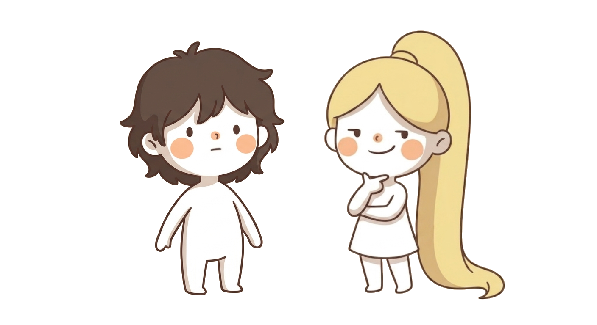
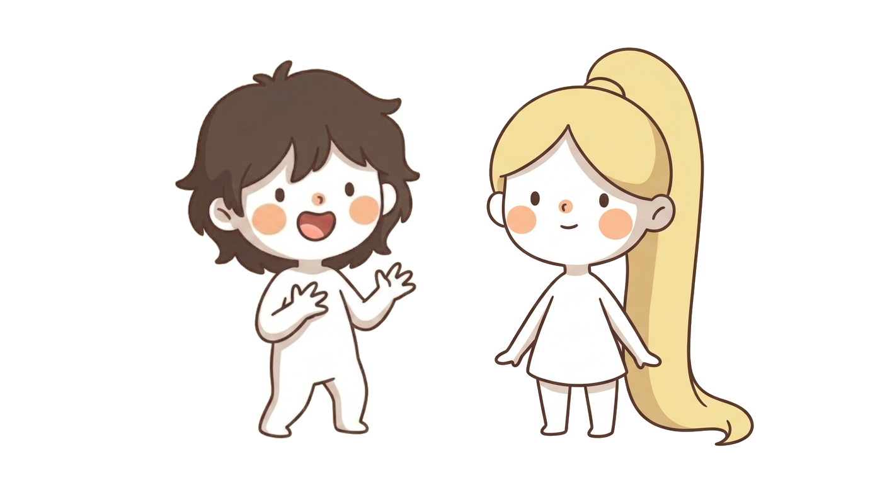
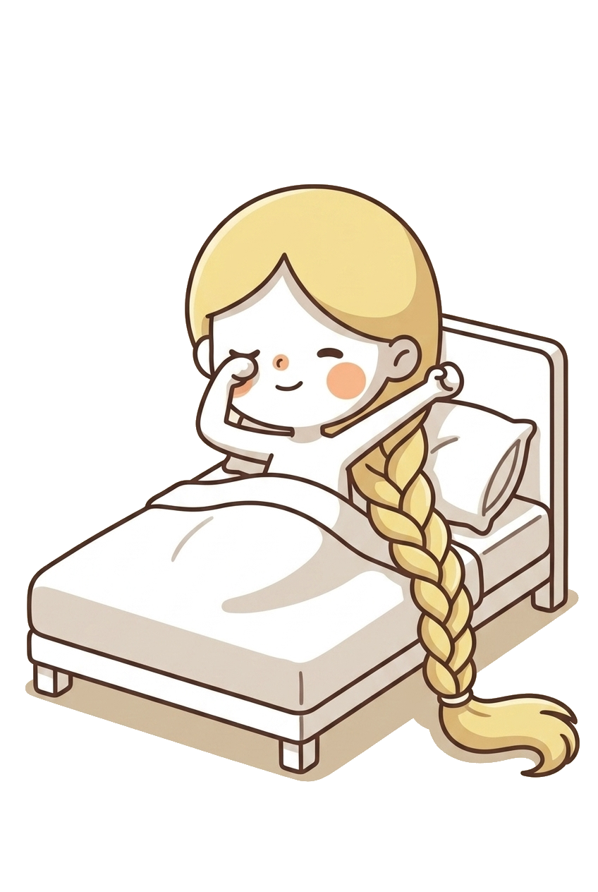
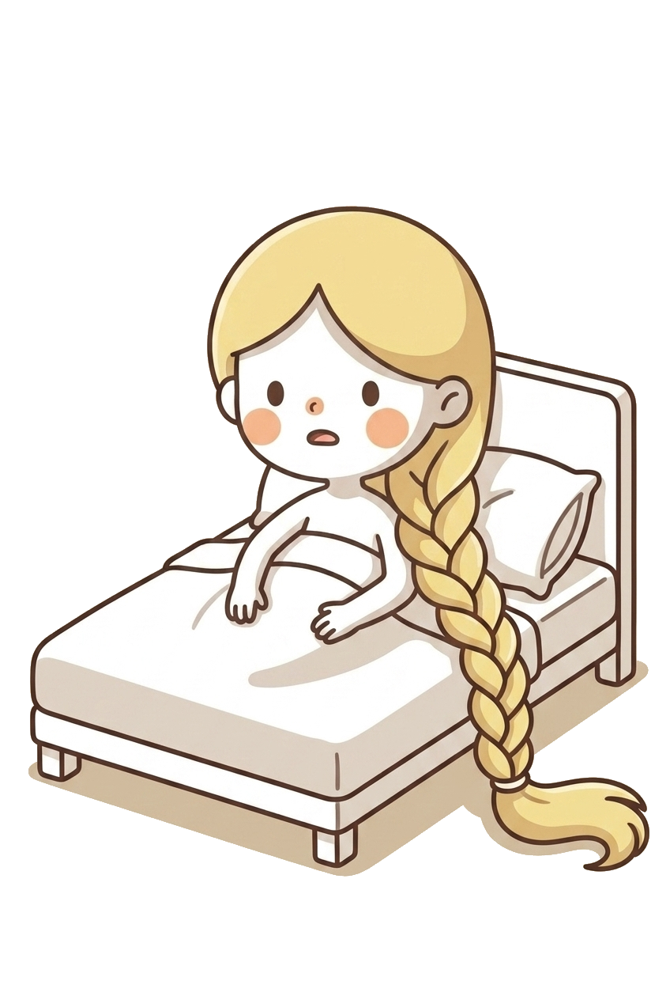
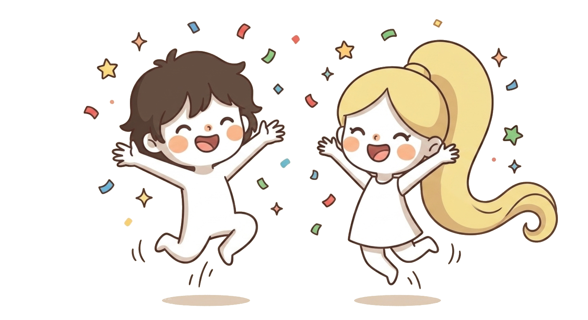
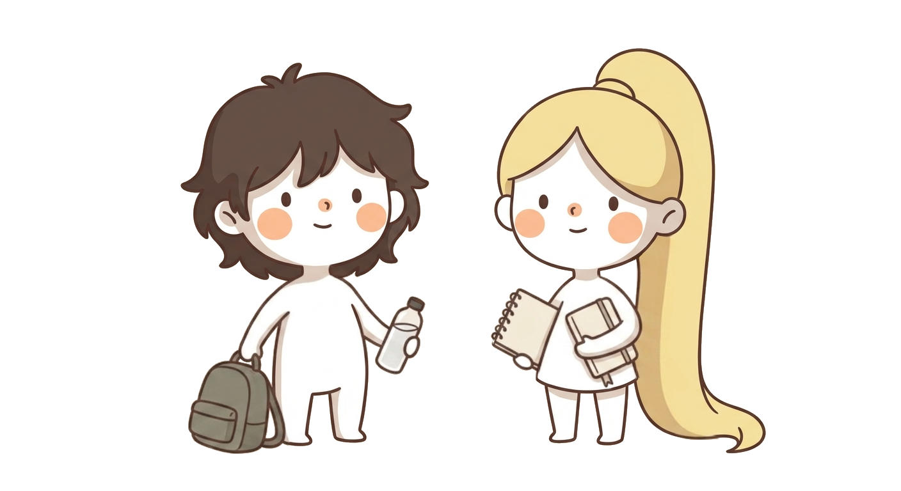
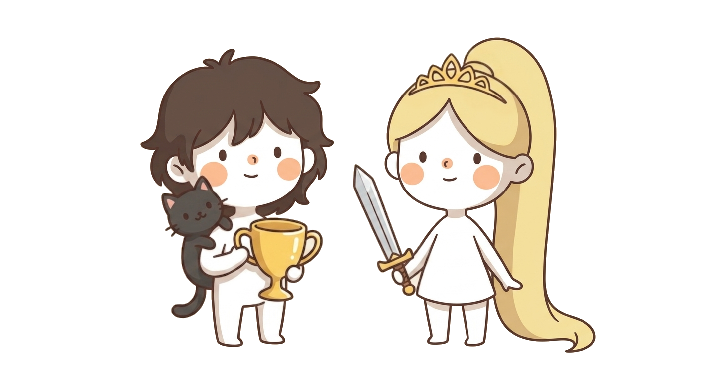
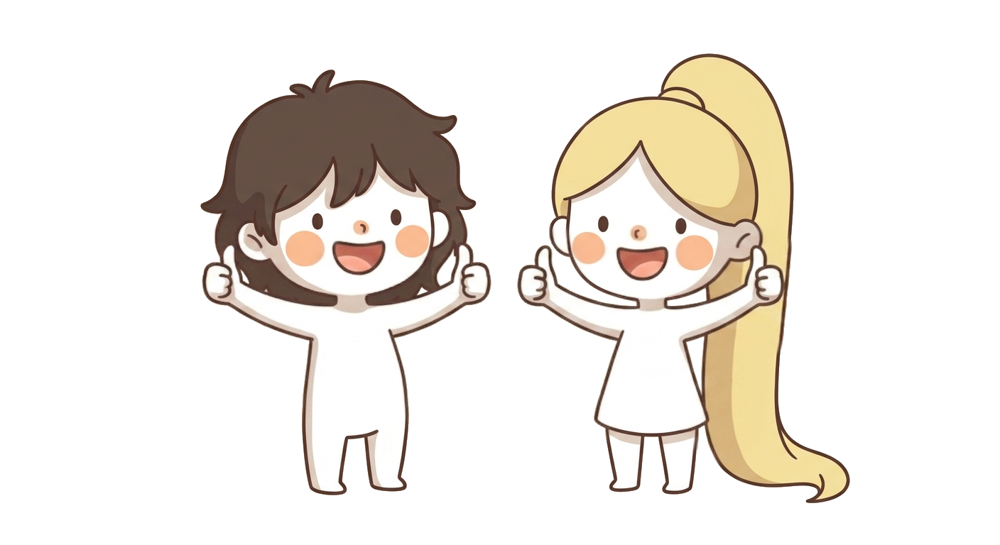
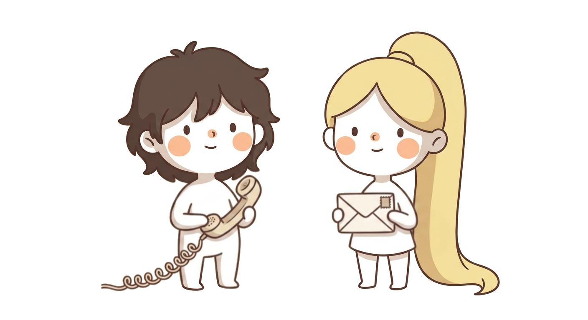

First
time?

This morning, when I woke up, a thought crossed my mind:

What she said meant: "I want to help the whole world learn French."

So I asked my friend Keb to help me. He always has good ideas.

So, we decided to build a really fun, creative website — exciting rewards, awesome cards to collect...
...and teach our beautiful language through fun illustrated stories — drawn by me!

...and teach our beautiful language through fun illustrated stories — drawn by me!

So? What do you say — ready to start?


Je veux aider toute la planète à apprendre le français.
¿Primera vez?
Esta mañana, al despertarme, se me ocurrió algo:
Lo que dijo significaba: «Quiero ayudar a todo el mundo a aprender francés».
Así que le pedí ayuda a mi amigo Keb. Él siempre tiene buenas ideas.
Y decidimos crear una página súper divertida y creativa: recompensas geniales, cartas increíbles para coleccionar...
...¡y enseñar nuestro hermoso idioma con historias ilustradas súper divertidas, dibujadas por mí!
...¡y enseñar nuestro hermoso idioma con historias ilustradas súper divertidas, dibujadas por mí!
Entonces, ¿qué me dices? ¿Empezamos?
Je veux aider toute la planète à apprendre le français.
Primeira vez?
Hoje de manhã, quando acordei, tive uma ideia:
O que ela disse queria dizer: «Eu quero ajudar o mundo inteiro a aprender francês».
Então pedi ajuda ao meu amigo Keb. Ele sempre tem ótimas ideias.
Aí decidimos criar um sítio super divertido e criativo: recompensas incríveis, cartas legais para colecionar...
...e ensinar nosso lindo idioma com histórias ilustradas superdivertidas, desenhadas por mim!
...e ensinar nosso lindo idioma com histórias ilustradas superdivertidas, desenhadas por mim!
E aí, o que você acha? Vamos começar?
Je veux aider toute la planète à apprendre le français.
Prima
volta?
Stamattina, appena sveglia, mi è venuta un'idea:
Quello che ha detto significa: «Voglio aiutare tutto il mondo a imparare il francese».
Così ho chiesto aiuto al mio amico Keb. Ha sempre buone idee.
Allora abbiamo deciso di creare un sito super divertente e creativo: premi fantastici, carte fichissime da collezionare...
...e insegnare la nostra bellissima lingua con storie illustrate divertentissime, disegnate da me!
...e insegnare la nostra bellissima lingua con storie illustrate divertentissime, disegnate da me!
Allora, che ne dici? Cominciamo?
Je veux aider toute la planète à apprendre le français.
第一次吗？
今天早上一醒来，我突然想到了一件事：
她的意思是：「我想帮助全世界的人学法语。」
所以我就去找我的朋友Keb帮忙，他总是有好点子。
于是我们决定做一个超好玩、超有创意的网站——超赞的奖励，还有酷炫的收藏卡片……
……还会用超有趣的插画故事教大家学法语，都是我画的哦！
……还会用超有趣的插画故事教大家学法语，都是我画的哦！
那你觉得怎么样？我们开始吧？
Je veux aider toute la planète à apprendre le français.
처음이세요?
오늘 아침에 눈을 뜨자마자 이런 생각이 들었어요:
그 말은 이런 뜻이었어요: "전 세계 사람들이 프랑스어를 배우도록 돕고 싶어요."
그래서 제 친구 Keb한테 도와달라고 했어요. 얘는 항상 좋은 아이디어가 많거든요.
그렇게 우리는 정말 재미있고 창의적인 사이트를 만들기로 했어요. 신나는 보상들, 모으고 싶은 멋진 카드들까지…
…재미있는 그림 이야기로 우리의 아름다운 언어를 가르치는 것도요. 제가 직접 그린 거예요!
…재미있는 그림 이야기로 우리의 아름다운 언어를 가르치는 것도요. 제가 직접 그린 거예요!
그래서, 어때요? 시작해 볼까요?
Je veux aider toute la planète à apprendre le français.
初めてですか？
今朝、目が覚めた瞬間、あることをふと思いついたの。
それはね、「世界中の人にフランス語を教えてあげたい」っていう意味だったんだ。
それで、友達のKebに手伝ってって頼んだの。あの子、いつもいいアイデアを持ってるから。
それで僕たち、すごく楽しくて創造力あふれるサイトを作ることにしたんだ——わくわくするごほうびや、集めたくなるすてきなカードもあってね……
……それに、楽しいイラストのお話でこのきれいな言葉を教えるの。全部私が描いたんだよ！
……それに、楽しいイラストのお話でこのきれいな言葉を教えるの。全部私が描いたんだよ！
というわけで、どう？始めてみる？
Je veux aider toute la planète à apprendre le français.
Lần đầu tiên?
Sáng nay, vừa mở mắt ra là mình đã nghĩ ngay đến một điều:
Điều cậu ấy nói có nghĩa là: «Mình muốn giúp cả thế giới học tiếng Pháp.»
Thế là mình nhờ Keb, người bạn thân của mình, giúp đỡ. Cậu ấy lúc nào cũng có những ý tưởng hay.
Thế là tụi mình quyết định làm một trang web thật vui và sáng tạo — phần thưởng cực đã, thẻ bài siêu đẹp để sưu tầm...
...và dạy ngôn ngữ xinh đẹp của tụi mình qua những câu chuyện minh họa siêu vui — do chính tay mình vẽ đó!
...và dạy ngôn ngữ xinh đẹp của tụi mình qua những câu chuyện minh họa siêu vui — do chính tay mình vẽ đó!
Vậy cậu thấy sao? Bắt đầu nhé?
Je veux aider toute la planète à apprendre le français.
Unang
beses?
Kaninang umaga, nang magising ako, may bigla akong naisip:
Ang ibig sabihin niya: «Gusto kong tulungan ang buong mundo na matuto ng Pranses.»
Kaya hiniling ko sa kaibigan kong si Keb na tulungan ako. Laging may magagandang ideya siya.
Kaya nagdesisyon kaming gumawa ng talagang masaya at malikhaing pahina — kahanga-hangang mga gantimpala, mga magagandang kard na pwedeng koleksyunin...
...at ituro ang ganda ng aming wika sa pamamagitan ng masasayang ilustradong mga kwento — ako mismo ang gumuhit!
...at ituro ang ganda ng aming wika sa pamamagitan ng masasayang ilustradong mga kwento — ako mismo ang gumuhit!
Kaya, ano sa tingin mo — simulan na natin?
Je veux aider toute la planète à apprendre le français.
Erstes
Mal?
Heute Morgen, gleich als ich aufgewacht bin, kam mir plötzlich ein Gedanke:
Was sie meinte, war: „Ich möchte der ganzen Welt helfen, Französisch zu lernen.“
Also habe ich meinen Freund Keb um Hilfe gebeten. Der hat immer gute Ideen.
Also haben wir beschlossen, eine total lustige, kreative Webseite zu bauen — mit spannenden Belohnungen, tollen Karten zum Sammeln...
...und unsere schöne Sprache mit lustigen, illustrierten Geschichten zu unterrichten — alle von mir gezeichnet!
...und unsere schöne Sprache mit lustigen, illustrierten Geschichten zu unterrichten — alle von mir gezeichnet!
Na, was sagst du — fangen wir an?
Je veux aider toute la planète à apprendre le français.
Eerste
keer?
Vanochtend, toen ik wakker werd, schoot me opeens iets te binnen:
Wat ze bedoelde was: "Ik wil de hele wereld helpen Frans te leren."
Dus ik vroeg mijn vriend Keb om hulp. Hij heeft altijd goede ideeën.
Dus besloten we een superleuke, creatieve website te maken — spannende beloningen, toffe kaarten om te verzamelen...
...en onze mooie taal te leren met leuke geïllustreerde verhalen — allemaal door mij getekend!
...en onze mooie taal te leren met leuke geïllustreerde verhalen — allemaal door mij getekend!
Nou, wat zeg je ervan — zullen we beginnen?
Je veux aider toute la planète à apprendre le français.
Primera
vegada?
Aquest matí, just en despertar-me, se'm va acudir una idea:
El que volia dir era: «Vull ajudar tothom, arreu del món, a aprendre francès.»
Així que li vaig demanar ajuda al meu amic Keb. Sempre té bones idees.
Així que vam decidir crear una pàgina web súper divertida i creativa: recompenses genials, cartes molt maques per col·leccionar...
...i ensenyar la nostra bonica llengua amb històries il·lustrades súper divertides, dibuixades per mi!
...i ensenyar la nostra bonica llengua amb històries il·lustrades súper divertides, dibuixades per mi!
Doncs, què me'n dius? Comencem?
Je veux aider toute la planète à apprendre le français.
Premye
fwa?
Maten an, lè m fèk leve, yon lide vin nan tèt mwen:
Sa l te vle di se: «Mwen vle ede tout moun nan lemonn aprann franse.»
Se konsa mwen te mande zanmi m Keb pou ede m. Li toujou gen bon lide.
Se konsa nou te deside kreye yon sit entènèt ki vrèman amizan e kreyatif — bèl rekonpans, kat cho pou kolekte...
...epi anseye bèl lang nou an ak istwa ilistre ki amizan — se mwen menm ki desine yo!
...epi anseye bèl lang nou an ak istwa ilistre ki amizan — se mwen menm ki desine yo!
Ebyen, kisa ou di — nou kòmanse?
Je veux aider toute la planète à apprendre le français.
Pertama
kali?
Pagi ini, begitu aku bangun, tiba-tiba sebuah ide terlintas:
Maksud dia adalah: "Aku ingin membantu seluruh dunia belajar bahasa Prancis."
Makanya aku minta bantuan temanku Keb. Dia selalu punya ide-ide bagus.
Jadi kami memutuskan untuk membuat situs yang seru dan kreatif — hadiah-hadiah keren, kartu-kartu asyik buat dikoleksi...
...dan mengajarkan bahasa kami yang indah lewat cerita-cerita bergambar yang seru — semuanya digambar sendiri olehku!
...dan mengajarkan bahasa kami yang indah lewat cerita-cerita bergambar yang seru — semuanya digambar sendiri olehku!
Nah, gimana menurutmu — kita mulai?
Je veux aider toute la planète à apprendre le français.
اولین بار؟
امروز صبح، همین که از خواب بیدار شدم، یهو یه فکری به ذهنم رسید:
منظورش این بود: «میخوام به همهی مردم دنیا کمک کنم فرانسوی یاد بگیرن.»
برای همین از دوستم Keb خواستم کمکم کنه. اون همیشه ایدههای خوبی داره.
برای همین تصمیم گرفتیم یه وبسایت خیلی باحال و خلاقانه بسازیم — با جایزههای هیجانانگیز، کارتهای باحال برای جمعآوری...
...و زبان زیبامون رو با داستانهای مصور و بامزه یاد بدیم — همهشونو خودم کشیدم!
...و زبان زیبامون رو با داستانهای مصور و بامزه یاد بدیم — همهشونو خودم کشیدم!
خب، نظرت چیه — شروع کنیم؟
Je veux aider toute la planète à apprendre le français.
Первый
раз?
Сегодня утром, как только я проснулась, мне вдруг пришла в голову одна мысль:
Она имела в виду: «Я хочу помочь всему миру выучить французский».
Поэтому я попросила помочь моего друга Keb. У него всегда отличные идеи.
И тогда мы решили создать супервесёлый и творческий сайт — классные награды, крутые карточки для коллекции...
...и научить всех нашему прекрасному языку через весёлые иллюстрированные истории — их все нарисовала я!
...и научить всех нашему прекрасному языку через весёлые иллюстрированные истории — их все нарисовала я!
Ну что, что скажешь — начнём?
Je veux aider toute la planète à apprendre le français.
Første
gang?
I morges, akkurat da jeg våknet, kom jeg plutselig på noe:
Det hun mente var: «Jeg vil hjelpe hele verden med å lære fransk.»
Så jeg spurte vennen min Keb om hjelp. Han har alltid gode ideer.
Så vi bestemte oss for å lage en superkul og kreativ nettside — spennende belønninger, kule kort å samle på...
...og lære bort vårt vakre språk gjennom morsomme illustrerte historier — alle tegnet av meg!
...og lære bort vårt vakre språk gjennom morsomme illustrerte historier — alle tegnet av meg!
Så, hva sier du — skal vi sette i gang?
Je veux aider toute la planète à apprendre le français.
Första
gången?
I morse, precis när jag vaknade, kom jag plötsligt att tänka på en sak:
Vad hon menade var: "Jag vill hjälpa hela världen att lära sig franska."
Så jag bad min vän Keb om hjälp. Han har alltid bra idéer.
Så vi bestämde oss för att bygga en superrolig och kreativ webbplats — spännande belöningar, häftiga kort att samla på...
...och lära ut vårt vackra språk genom roliga illustrerade berättelser — alla ritade av mig!
...och lära ut vårt vackra språk genom roliga illustrerade berättelser — alla ritade av mig!
Nå, vad säger du — ska vi sätta igång?
Je veux aider toute la planète à apprendre le français.
Unua
fojo?
Ĉi-matene, tuj kiam mi vekiĝis, subite venis al mi ideo:
Tio, kion ŝi diris, signifis: "Mi volas helpi la tutan mondon lerni la francan."
Do mi petis mian amikon Keb helpi min. Li ĉiam havas bonajn ideojn.
Do ni decidis krei tre amuzan kaj kreivan retejon — ekscitaj premioj, mojosaj kartoj por kolekti...
...kaj instrui nian belan lingvon per amuzaj bildstrataj rakontoj — ĉiuj desegnitaj de mi mem!
...kaj instrui nian belan lingvon per amuzaj bildstrataj rakontoj — ĉiuj desegnitaj de mi mem!
Do, kion vi diras — ĉu ni komencu?
Je veux aider toute la planète à apprendre le français.

Save your progress?
Enter your email — we'll send you a code, no password needed.
You can always create an account later from "My profile".




